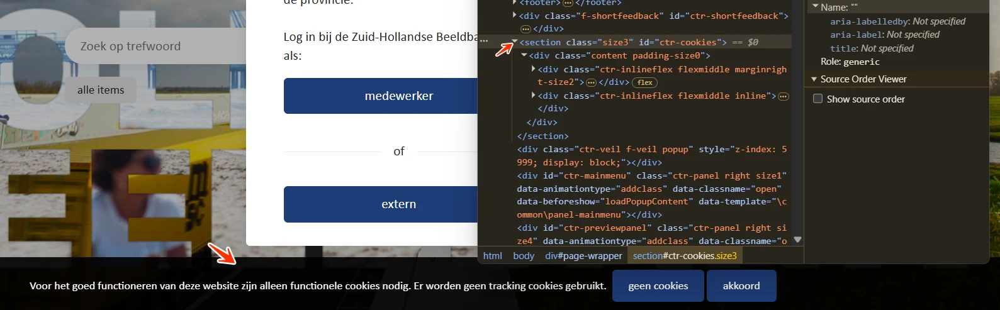
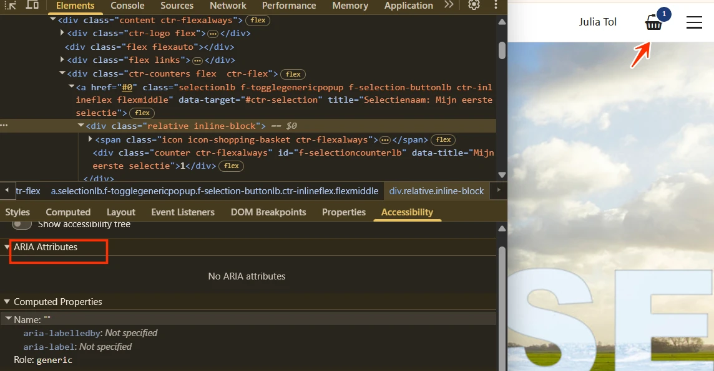
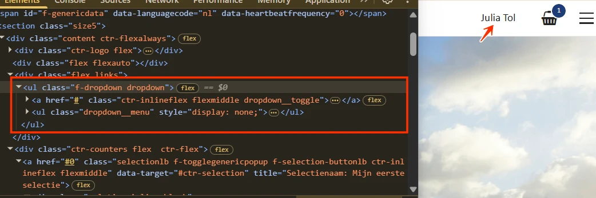
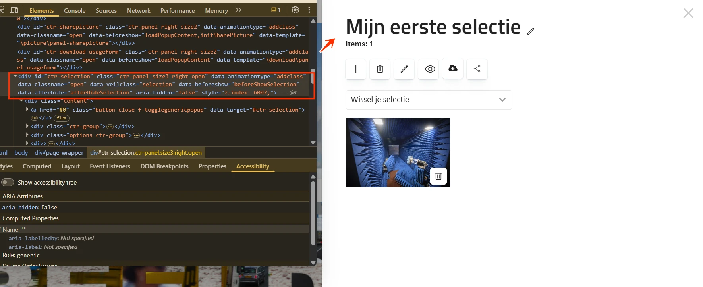
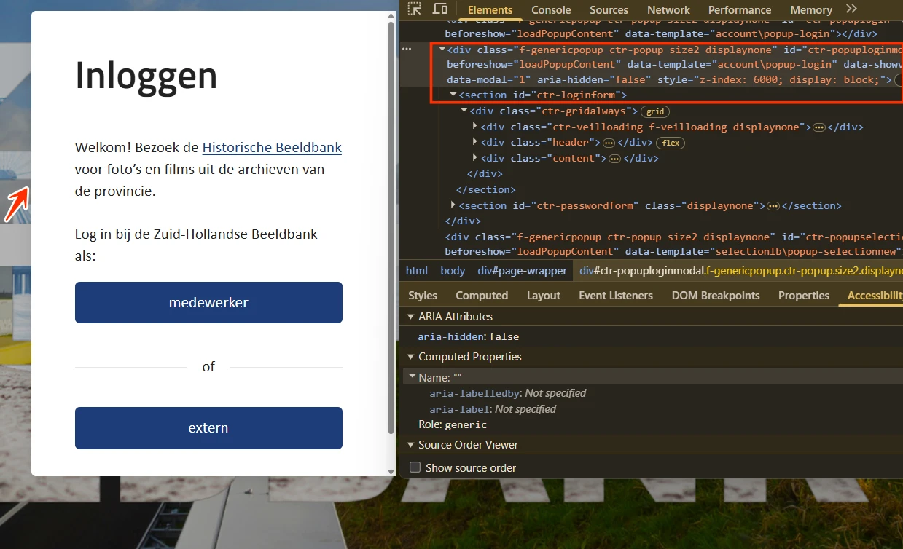
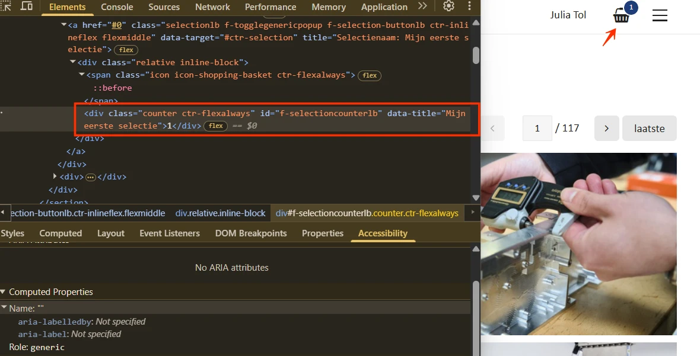
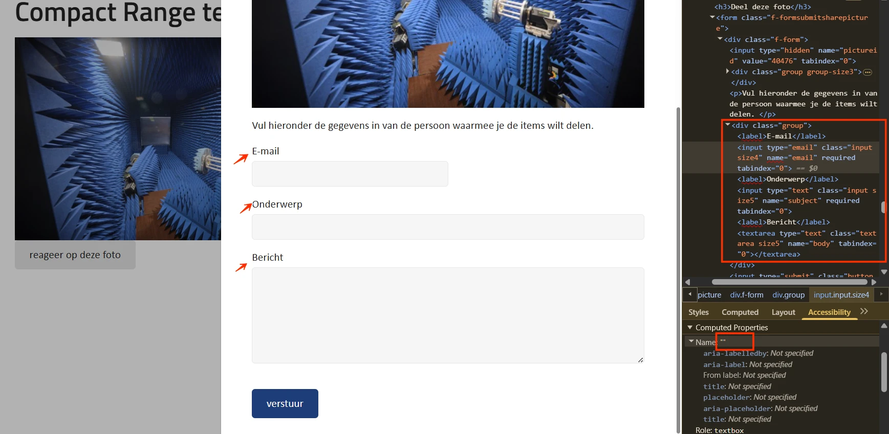
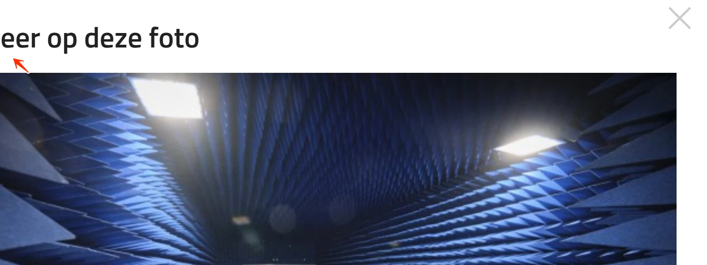
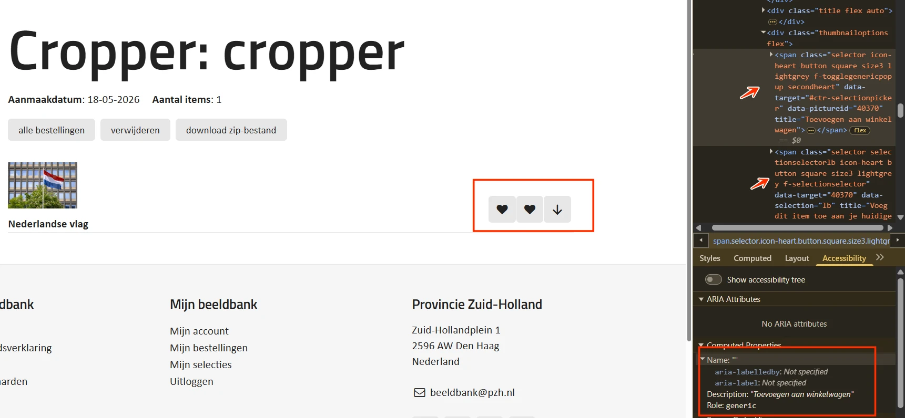
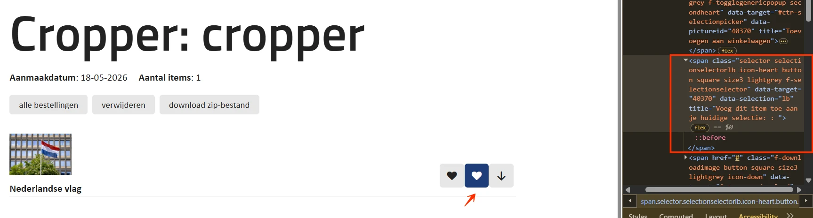

Audit digitale toegankelijkheid van website beeldbank.zuid-holland.nl
Samenvatting
Wij hebben de website beeldbank.zuid-holland.nl onderzocht tussen 6 en 20 mei 2026. Op dit moment is een deel van de succescriteria als voldoende beoordeeld. In dit rapport lees je welke punten nog verbetering behoeven en hoe deze kunnen worden aangepakt.
Op alle pagina's van deze website is de standaard toetsenbordfocus uit het CSS verwijderd voor alle interactieve elementen, en er is geen alternatieve focusindicator voorzien. Bezoekers die met het toetsenbord navigeren, kunnen daardoor niet zien op welk element de focus staat.
User story
Als bezoeker die met het toetsenbord navigeert, slechtziend is of de pagina vergroot weergeeft, volg ik visueel waar de focus zich bevindt. Elk interactief element heeft een duidelijk zichtbare focusindicator nodig. Nu is de standaardindicator weggehaald zonder vervanging, en navigeer ik blind door de pagina.
Oplossing:
Zorg dat elk interactief element (link, knop, invoerveld) een duidelijk zichtbare focusindicator heeft. Gebruik CSS met de :focus- of :focus-visible-pseudoclass om een zichtbare outline toe te passen, bijvoorbeeld:
Op alle pagina's staat bovenaan een link met een icoon van drie horizontale streepjes die het menu opent. Het icoon heeft geen tekstalternatief en de link heeft geen toegankelijke naam. Wanneer een link alleen uit een afbeelding bestaat, moet het tekstalternatief van de afbeelding de functie van de link beschrijven. Hulpsoftware kondigt nu alleen "link" aan, zonder dat duidelijk is dat deze het menu opent.
User story
Als bezoeker die een schermlezer of spraakbesturing gebruikt, herken ik icoonlinks via een tekstalternatief. Elke icoonlink heeft een toegankelijke naam nodig via alt, aria-label of visueel verborgen tekst. Zonder die naam hoort mijn schermlezer alleen "link" en weet ik niet wat er gebeurt als ik hem activeer.
Oplossing:
Voeg een tekstalternatief toe op één van de volgende manieren:
alt-tekst: als het icoon een img-element is, geef het een functionele beschrijving in het alt-attribuut (bijvoorbeeld alt="Menu openen").
aria-label: voeg een aria-label-attribuut toe aan de link met een korte beschrijving van de functie.
Visueel verborgen tekst: plaats beschrijvende tekst in de link en verberg deze visueel met CSS, zodat schermlezers de tekst wel kunnen voorlezen.
#3 - Link kondigt niet aan dat een dialoogvenster opent
Impact: GrootType: TechniekWCAG: 4.1.2EN: 9.4.1.2
Bovenaan de pagina staat een link met een icoon van drie streepjes die een dialoogvenster met het menu opent. Deze functie is niet vastgelegd in de code, waardoor hulpsoftware niet kan aankondigen dat er een dialoogvenster wordt geopend.
User story
Als bezoeker met een schermlezer moet ik kunnen horen wanneer een link een dialoogvenster opent. Elke link die een dialoog opent, moet aria-haspopup="dialog" en aria-expanded blootleggen. Zonder deze attributen weet ik niet welk overlay-venster gaat verschijnen.
Oplossing:
Voeg het attribuut aria-haspopup="dialog" toe aan de link, zodat hulpsoftware weet dat er een dialoogvenster wordt geopend. Gebruik daarnaast aria-expanded om de staat van het dialoogvenster aan te geven: aria-expanded="true" als het venster open is en aria-expanded="false" als het gesloten is.
#4 - Dialoogvenster heeft geen role=dialog en geen toegankelijke naam
Impact: GrootType: TechniekWCAG: 4.1.2EN: 9.4.1.2
Bovenaan de pagina staat een link met een icoon van drie streepjes die een dialoogvenster met het menu opent. Dit dialoogvenster heeft geen role="dialog" en geen toegankelijke naam. Schermlezers kunnen het element daardoor niet als dialoogvenster herkennen en kunnen ook het doel of de inhoud niet doorgeven.
User story
Als bezoeker met een schermlezer heb ik bij elk dialoogvenster een role="dialog" en een toegankelijke naam nodig (via aria-label of aria-labelledby). Zonder die attributen mist mijn schermlezer het overlay-venster volledig.
Oplossing:
Voeg role="dialog" toe aan het dialoogvenster en geef het een toegankelijke naam via aria-label="Hoofdmenu" of aria-labelledby dat verwijst naar de zichtbare titel binnen het venster.
Bovenaan de pagina staat een link met een icoon van drie streepjes die een menu opent. In dit menu staat een link met een lichtgrijs (#CCCCCC) "x"-icoon op een witte (#F6F6F6) achtergrond. De contrastverhouding van 1,5:1 is te laag. Daardoor is het icoon moeilijk of niet zichtbaar voor bezoekers met een visuele beperking of kleurenblindheid.
User story
Als bezoeker met een visuele beperking herken ik icoonlinks aan voldoende contrast. Het icoon op elke link zonder zichtbare tekst heeft minimaal 3:1 contrast nodig. Een icoon dat ik niet kan zien, is een link die ik niet kan gebruiken.
Oplossing:
Zorg dat het icoon een contrastverhouding van minimaal 3,0:1 heeft ten opzichte van de achtergrond.
#6 - Linktekst is niet duidelijk genoeg
Impact: MediumType: ContentWCAG: 2.4.4EN: 9.2.4.4
Bovenaan staat een link met een icoon van drie streepjes die een menu opent. In dat menu staat een link met een "x"-icoon waarmee het menu wordt gesloten. De toegankelijke naam van deze link is "Open het menu", terwijl de functie juist het sluiten is. Bezoekers met hulpsoftware krijgen daardoor een verkeerde verwachting van wat de link doet.
User story
Als bezoeker met een schermlezer heb ik toegankelijke namen nodig die de functie van een knop of link correct beschrijven, zodat ik weet of de actie het menu opent of juist sluit.
Oplossing:
Zorg dat de toegankelijke naam de werkelijke functie van de link beschrijft, bijvoorbeeld "Menu sluiten" voor de link die het menu sluit.
In de footer van alle pagina's staan links naar sociale media zonder toegankelijke naam. Bezoekers met een schermlezer kunnen daardoor de bestemming van de link niet vaststellen. Er is geprobeerd om een toegankelijke naam te bieden via het title-attribuut, maar dat werkt niet betrouwbaar.
User story
Als bezoeker met een schermlezer of spraakbesturing navigeer ik via linktekst. Elke link heeft een toegankelijke naam nodig via zichtbare tekst, aria-label of visueel verborgen tekst. Nu hoor ik alleen "link" en weet ik niet waar ik terechtkom.
Oplossing:
Geef deze links een toegankelijke naam, bijvoorbeeld via een aria-label of een visueel verborgen tekst die de bestemming beschrijft ("Bezoek onze Facebook-pagina").
De pagina's hebben geen zichtbare skiplink ("Direct naar de inhoud"). Hoewel er landmarks en koppen aanwezig zijn die de paginastructuur ondersteunen, helpt een skiplink toetsenbordgebruikers om de herhalende navigatie sneller over te slaan en direct bij de hoofdinhoud te komen.
User story
Als bezoeker die met het toetsenbord navigeert, wil ik een skiplink waarmee ik direct naar de hoofdinhoud kan springen, zodat ik niet op elke pagina opnieuw door dezelfde navigatie-elementen hoef te tabben.
Oplossing:
Voeg een skiplink toe aan het begin van de pagina die de toetsenbordfocus naar de hoofdinhoud verplaatst. De skiplink mag standaard verborgen zijn, maar moet zichtbaar worden zodra hij toetsenbordfocus krijgt.
#9 - Cookiedialoog heeft geen role=dialog en geen toegankelijke naam
Impact: GrootType: TechniekWCAG: 4.1.2EN: 9.4.1.2

Onderaan de pagina verschijnt een dialoogvenster met de cookiemelding. Dit dialoogvenster heeft geen role="dialog" en geen toegankelijke naam. Schermlezers kunnen het element daardoor niet als dialoogvenster herkennen en kunnen het doel of de inhoud niet doorgeven.
User story
Als bezoeker met een schermlezer heb ik bij elk dialoogvenster een role="dialog" en een toegankelijke naam nodig (via aria-label of aria-labelledby). Zonder die attributen mist mijn schermlezer de cookiemelding volledig.
Oplossing:
Voeg role="dialog" toe aan het cookievenster en geef het een toegankelijke naam via aria-label="Cookiemelding" of aria-labelledby dat verwijst naar de zichtbare titel binnen het venster.
#10 - Focus wordt onzichtbaar doordat cookiebanner inhoud bedekt bij inzoomen
Wanneer een bezoeker de website voor het eerst bezoekt, verschijnt een cookiebanner. Als de bezoeker daarna inzoomt tot 200% of 400% op een scherm van 1280 bij 1024 pixels, komt de toetsenbordfocus terecht op elementen die onder de banner verborgen zijn, bijvoorbeeld de link "Picture Pack". Daardoor is niet meer te zien waar de focus staat.
User story
Als bezoeker met een visuele beperking gebruik ik bij 200% of 400% zoom het toetsenbord. De cookiemelding mag de inhoud niet bedekken, of de verborgen elementen moeten uit de tabvolgorde verdwijnen. Nu raakt mijn focus onzichtbaar achter de banner.
Oplossing:
Zorg dat de cookiebanner correct meeschaalt bij inzoomen, of dat elementen die onder de banner staan tijdelijk uit de tabvolgorde verdwijnen zolang de banner open is.
#11 - Pop-upstatus wordt niet doorgegeven aan schermlezer
Impact: GrootType: TechniekWCAG: 4.1.2EN: 9.4.1.2
In de header staat een link met de accountnaam die aanvullende inhoud opent en sluit. De code geeft niet aan of dit venster open of gesloten is. Hulpsoftware heeft die informatie nodig om de staat van het venster te kunnen doorgeven aan bezoekers, in het bijzonder aan blinden en slechtzienden.
User story
Als bezoeker met een schermlezer volg ik pop-upknoppen via hun staat. Elke pop-upknop moet zijn staat blootleggen via aria-expanded (true of false). Zonder dat kan ik niet horen of de pop-up open of dicht is.
Oplossing:
Gebruik aria-expanded="true" als het venster open is en aria-expanded="false" als het gesloten is. Let op: aria-expanded werkt alleen betrouwbaar zolang de focus op de knop blijft. Als de focus naar het geopende venster verspringt, gebruik dan visueel verborgen tekst om de staat aan te geven en werk die tekst dynamisch bij.
#12 - Linktekst is niet duidelijk genoeg
Impact: MediumType: ContentWCAG: 2.4.4EN: 9.2.4.4

In de header staat een link met een winkelwagen-icoon. De toegankelijke naam van de link wordt afgeleid van het naastliggende aantal (bijvoorbeeld "0"), wat de functie niet duidelijk maakt. Bezoekers begrijpen daardoor niet dat deze link de winkelwagen opent. Er is geprobeerd om een toegankelijke naam te bieden via het title-attribuut, maar dat werkt niet betrouwbaar.
User story
Als bezoeker met een schermlezer die per link navigeert, heb ik bij de winkelwagen-link een betekenisvolle toegankelijke naam nodig. Anders hoor ik alleen een getal en weet ik niet dat de link de winkelwagen opent.
Oplossing:
Geef de link een duidelijke en beschrijvende toegankelijke naam, bijvoorbeeld "Winkelwagen" of "Winkelwagen, 0 items". Gebruik een betrouwbare techniek zoals aria-label of aria-labelledby.
#13 - Onjuiste lijststructuur
Impact: MediumType: ContentWCAG: 1.3.1EN: 9.1.3.1

In de header staat een link met de accountnaam binnen een ul-element zonder bijbehorende li-elementen. Daardoor klopt de semantische lijststructuur niet, en kan hulpsoftware de relatie tussen de lijst en de items niet correct doorgeven.
User story
Als bezoeker met een schermlezer heb ik correct opgemaakte lijsten nodig, zodat ik bij elkaar horende navigatie-items als één geheel herken en op een voorspelbare manier kan doorlopen.
Oplossing:
Zorg dat alle inhoud binnen een ul-element in li-elementen wordt geplaatst.
#14 - Inzoomen is niet mogelijk
Impact: GrootType: TechniekWCAG: 1.4.4EN: 9.1.4.4
In het head-element van alle pagina's staat maximum-scale=1. Deze code voorkomt dat bezoekers in sommige browsers kunnen inzoomen.
User story
Als bezoeker met een visuele beperking gebruik ik op mobiel pinch-to-zoom om tekst te lezen. De viewport mag geen maximum-scale=1 of user-scalable=no bevatten. Anders kan ik niet inzoomen en blijft de tekst te klein.
Oplossing:
Verwijder maximum-scale=1 (en zo nodig user-scalable=no) uit de viewport-meta in het head-element.
#15 - Dialoogvenster heeft geen role=dialog en geen toegankelijke naam
Impact: GrootType: TechniekWCAG: 4.1.2EN: 9.4.1.2

Wanneer op een pagina op de link met het mandje-icoon wordt geklikt, opent een dialoogvenster. Dit dialoogvenster heeft geen role="dialog" en geen toegankelijke naam. Hetzelfde probleem komt voor bij de andere dialoogvensters in deze sectie. Schermlezers kunnen het element daardoor niet als dialoogvenster herkennen en kunnen het doel of de inhoud niet doorgeven.
User story
Als bezoeker met een schermlezer heb ik bij elk dialoogvenster een role="dialog" en een toegankelijke naam nodig (via aria-label of aria-labelledby). Zonder die attributen mist mijn schermlezer het overlay-venster volledig.
Oplossing:
Voeg role="dialog" toe aan het dialoogvenster en geef het een toegankelijke naam via aria-label of aria-labelledby die verwijst naar de zichtbare titel binnen het venster.
Bovenaan dit dialoogvenster staat een link met een lichtgrijs (#CCCCCC) "x"-icoon op een witte achtergrond. De contrastverhouding van 1,6:1 is te laag. Daardoor is het icoon moeilijk of niet zichtbaar voor bezoekers met een visuele beperking of kleurenblindheid.
User story
Als bezoeker met een visuele beperking herken ik icoonlinks aan voldoende contrast. Het icoon op elke link zonder zichtbare tekst heeft minimaal 3:1 contrast nodig. Een icoon dat ik niet kan zien, is een link die ik niet kan gebruiken.
Oplossing:
Zorg dat het icoon een contrastverhouding van minimaal 3,0:1 heeft ten opzichte van de achtergrond.
Bovenaan dit dialoogvenster staat een link met een "x"-icoon zonder toegankelijke naam. Bezoekers met een schermlezer kunnen daardoor de functie of bestemming van de link niet vaststellen.
User story
Als bezoeker met een schermlezer of spraakbesturing volg ik links via hun toegankelijke naam. Elke link heeft een naam nodig via zichtbare tekst, aria-label of visueel verborgen tekst. Nu heeft deze link geen naam en hoor ik alleen "link".
Oplossing:
Geef de link een toegankelijke naam, bijvoorbeeld "Dialoogvenster sluiten", via visueel verborgen tekst, een aria-label of een andere geschikte techniek.
In dit dialoogvenster staat een keuzelijst (select-element) "Wissel je selectie". De toegankelijke naam ontbreekt, waardoor de keuzelijst niet toegankelijk is voor bezoekers met een schermlezer.
User story
Als bezoeker met een schermlezer of spraakbesturing vul ik keuzelijsten in. Elke select heeft een toegankelijke naam nodig. Anders hoor ik alleen "combobox" en weet ik niet wat ik moet kiezen.
Oplossing:
Geef het select-element een toegankelijke naam via een label of aria-label.
In dit dialoogvenster staat een select-element zonder label. De eerste optie binnen het select-element kan niet als label dienen, omdat die verdwijnt zodra er een andere optie wordt gekozen. Daardoor weten bezoekers niet meer waar de keuzelijst over gaat. De teksten van de opties zijn zelf ook niet zelfverklarend.
User story
Als bezoeker met een schermlezer of cognitieve beperking vul ik keuzelijsten in. Elke select heeft een blijvend zichtbaar label nodig. Anders verdwijnt het pseudo-label en weet ik de functie van de keuzelijst niet meer.
Oplossing:
Geef het select-element een blijvend zichtbaar label dat de functie duidelijk maakt.
#20 - Onvoldoende contrast van rand van invoervelden
In dit dialoogvenster staat een knop met een "+"-icoon die een dialoogvenster met een invoerveld opent. De rand van het invoerveld is lichtgrijs (#CCCCCC) op een witte achtergrond. De contrastverhouding is 1,6:1. Hetzelfde probleem komt voor bij andere dialoogvensters in deze sectie.
User story
Als bezoeker met een visuele beperking herken ik invoervelden aan hun rand. Elke invoerveldrand heeft minimaal 3:1 contrast nodig met de achtergrond. Anders zie ik het veld niet en weet ik niet dat ik er iets kan typen.
Oplossing:
Pas de kleur van de invoerveldrand aan zodat deze minimaal 3,0:1 contrast heeft met de achtergrond.
#21 - Focusvolgorde is niet logisch bij geopend dialoogvenster
Impact: GrootType: TechniekWCAG: 2.4.3EN: 9.2.4.3
Wanneer dit dialoogvenster wordt geopend, springt de toetsenbordfocus niet automatisch naar het venster zelf.
User story
Als bezoeker die met het toetsenbord of een schermlezer navigeert, moet de focus bij elke modale dialoog automatisch in het venster terechtkomen, bijvoorbeeld op het eerste interactieve element of op een kop. Anders loopt mijn volgende Tab door de achterliggende pagina.
Oplossing:
Verplaats de toetsenbordfocus bij het openen van het dialoogvenster naar een logisch element binnen het venster, bijvoorbeeld het eerste invoerveld of een kop met de titel van het venster.
#22 - Dialoogvenster heeft geen role=dialog en geen toegankelijke naam
Impact: GrootType: TechniekWCAG: 4.1.2EN: 9.4.1.2

Wanneer een bezoeker de pagina voor het eerst bezoekt, verschijnt een modaal inlog-dialoogvenster. Dit dialoogvenster heeft geen role="dialog" en geen toegankelijke naam. Hetzelfde probleem komt voor op de pagina https://beeldbank.zuid-holland.nl/search.pp, bij de dialoogvensters die openen bij het klikken op een afbeelding in de zoekresultaten.
User story
Als bezoeker met een schermlezer heb ik bij elk dialoogvenster een role="dialog" en een toegankelijke naam nodig (via aria-label of aria-labelledby). Zonder die attributen mist mijn schermlezer het overlay-venster volledig.
Oplossing:
Voeg role="dialog" toe aan het dialoogvenster en geef het een toegankelijke naam, bijvoorbeeld aria-label="Inloggen".
#23 - Onvoldoende contrast van rand van invoervelden
In het inlog-dialoogvenster staat een link "Extern" die een formulier opent. De lichtgrijze (#E6E6E6) randen van de invoervelden op een witte achtergrond hebben een te lage contrastverhouding van 1,2:1. Hetzelfde probleem komt voor bij het selectievakje onder "Blijf ingelogd op deze computer" en bij het "E-mail"-veld na het klikken op de link "Wachtwoord vergeten". Hetzelfde probleem komt ook voor op de pagina https://beeldbank.zuid-holland.nl/register.pp.
User story
Als bezoeker met een visuele beperking herken ik invoervelden aan hun rand. Elke invoerveldrand heeft minimaal 3:1 contrast nodig met de achtergrond. Anders zie ik het veld niet en weet ik niet dat ik er iets kan typen.
Oplossing:
Pas de kleur van de invoerveldranden aan zodat deze minimaal 3,0:1 contrast hebben met de achtergrond.
In het inlog-dialoogvenster staat een link "Extern" die een formulier opent met invoervelden voor persoonlijke informatie (bijvoorbeeld "Loginnaam") zonder autocomplete-attribuut. Wanneer een formulier persoonlijke gegevens verzamelt, hoort het juiste autocomplete-attribuut op deze invoervelden te staan, zodat browsers en hulpsoftware velden automatisch kunnen invullen. Hetzelfde probleem komt voor bij het "E-mail"-veld na het klikken op "Wachtwoord vergeten", en op de pagina https://beeldbank.zuid-holland.nl/register.pp.
User story
Als bezoeker met motorische beperkingen of tremoren wil ik dat persoonlijke velden automatisch worden ingevuld door mijn browser of hulpsoftware. Nu kan mijn browser de velden niet vullen, omdat het autocomplete-attribuut ontbreekt.
In het inlog-dialoogvenster staat een link "Wachtwoord vergeten" die aanvullende inhoud opent met een "E-mail"-veld. Dit formulier gebruikt HTML5-validatie en toont de standaard HTML5-foutmeldingen bij leeg of onjuist verzenden. Deze standaardmeldingen worden niet betrouwbaar ondersteund door alle browsers en schermlezers. Elke browser toont ze anders en de toegankelijkheid (volledigheid, duur) is niet gegarandeerd.
User story
Als bezoeker met een schermlezer hoor ik bij het maken van een fout soms geen foutmelding of een onduidelijke melding. Ik wil altijd een duidelijke uitleg horen van wat er mis ging en hoe ik het kan oplossen.
Oplossing:
Implementeer aangepaste, toegankelijke foutmeldingen voor dit formulier. Controleer daarna ook de andere formulieren op de website op vergelijkbare afhankelijkheid van HTML5-standaardmeldingen en pas dezelfde oplossing toe.
#26 - Functie verdwijnt of is niet meer zichtbaar bij 400% zoom
Wanneer een bezoeker de pagina voor het eerst bezoekt, verschijnt een modaal inlog-dialoogvenster. Op een scherm van 1280 bij 1024 pixels met 400% zoom is het onderliggende inlogformulier niet zichtbaar en niet bedienbaar. Inzoomen tot 400% mag de functionaliteit of zichtbaarheid van informatieve elementen niet aantasten.
User story
Als bezoeker met een visuele beperking zoom ik tot 400% in om de pagina te kunnen lezen. Als ik ver inzoom, verdwijnen knoppen of links of zijn ze niet meer te gebruiken. Ik wil dat alles op de pagina blijft werken bij inzoomen.
Oplossing:
Zorg dat alle elementen op het scherm zichtbaar en bedienbaar blijven bij 400% zoom op een scherm van 1280 bij 1024 pixels.
#27 - Knop bestaat alleen uit een afbeelding zonder tekstalternatief
Bij het zoekveld staat een knop met een vergrootglas-icoon. Het icoon heeft geen tekstalternatief en de knop heeft geen toegankelijke naam. Wanneer een knop alleen uit een afbeelding bestaat, moet het tekstalternatief de functie van de knop beschrijven. Hetzelfde probleem komt voor op de pagina https://beeldbank.zuid-holland.nl/search.pp.
User story
Als bezoeker met een schermlezer hoor ik bij een icoonknop alleen "knop" zonder beschrijving van de functie. Ik wil dat mijn schermlezer duidelijk benoemt wat de knop doet.
Oplossing:
Voeg een tekstalternatief toe op één van de volgende manieren:
aria-label: voeg een aria-label-attribuut toe aan de knop met een korte beschrijving van de functie (bijvoorbeeld "Zoeken").
Visueel verborgen tekst: plaats beschrijvende tekst in de knop en verberg deze visueel met CSS, zodat schermlezers de tekst wel kunnen voorlezen.
#28 - Zoeksuggesties hebben niet de juiste rol
Impact: GrootType: TechniekWCAG: 4.1.2EN: 9.4.1.2
De zoekbalk toont suggesties in een keuzelijst tijdens het typen en functioneert als een combobox. In het invoerveld ontbreekt echter de juiste rol. Hetzelfde probleem komt voor op de pagina https://beeldbank.zuid-holland.nl/search.pp.
User story
Als bezoeker met een schermlezer hoor ik tijdens het typen in de zoekbalk niet dat er suggesties verschijnen. Ik wil dat mijn schermlezer aankondigt wanneer de suggestielijst opent.
Oplossing:
Maak de zoekbalk toegankelijk als combobox door minimaal:
role="combobox" toe te voegen aan het invoerveld om de rol als combobox aan te geven.
aria-expanded="true" te gebruiken wanneer de suggestielijst zichtbaar is en aria-expanded="false" wanneer deze verborgen is.
Op een scherm van 1280 bij 1024 pixels met 400% zoom verschijnt een scrollbalk en wordt de kop "Beeldtaal" gedeeltelijk afgeknipt. Horizontaal scrollen mag niet nodig zijn, ook niet bij een viewport van 320 CSS-pixels breed (voor verticale inhoud) of 256 CSS-pixels hoog (voor horizontale inhoud). De tekst moet binnen het scherm passen. Horizontaal én verticaal scrollen is alleen toegestaan als de betekenis of het gebruik van de inhoud dat echt vereist (bijvoorbeeld bij tabellen, betekenisvolle afbeeldingen en kaarten). Hetzelfde probleem komt voor op de pagina https://beeldbank.zuid-holland.nl/search.pp.
User story
Als bezoeker met een visuele beperking zoom ik tot 400% in om de pagina te kunnen lezen. Bij inzoomen verschijnt een horizontale scrollbalk, en moet ik op elke regel heen en weer scrollen. Ik wil dat de tekst automatisch binnen de breedte van mijn scherm past.
Oplossing:
Controleer of horizontaal scrollen echt nodig is. Zo niet, zorg dan dat horizontaal scrollen niet voorkomt bij inzoomen.
#30 - Visueel meerdere alinea's, in de HTML één alinea
Impact: MediumType: ContentWCAG: 1.3.1EN: 9.1.3.1
Op deze pagina is onder de koppen "Nieuwe beelden van het verleden, heden en de toekomst" en "Richtlijnen" een blok tekst met meerdere alinea's opgemaakt als één p-element. De visuele structuur van de inhoud moet ook in de HTML terug te vinden zijn.
User story
Als bezoeker met een schermlezer navigeer ik door de tekst per alinea. Nu worden alle alinea's als één lang blok voorgelezen. Ik wil elke visuele alinea apart kunnen bereiken.
Oplossing:
Plaats elke visuele alinea in een eigen p-element, zodat de semantische structuur overeenkomt met de visuele opmaak en hulpsoftware de inhoud op dezelfde manier kan doorgeven.
#31 - Visuele lijst is niet opgemaakt met lijstelementen
Impact: GrootType: TechniekWCAG: 1.3.1EN: 9.1.3.1
Onder de kop "Eigendomsrecht en hergebruik" wordt inhoud visueel gepresenteerd als een lijst met 9 items, maar deze is niet semantisch opgemaakt met HTML-lijstelementen (ol, li). Zonder juiste lijst-opmaak kan een schermlezer de inhoud niet als lijst herkennen en niet aankondigen hoeveel items de lijst bevat. Bezoekers die hulpsoftware gebruiken missen daardoor structurele informatie die voor ziende bezoekers wel zichtbaar is.
User story
Als bezoeker met een schermlezer hoor ik bij een lijst niet hoeveel items er zijn of dát het een lijst is. Ik wil dat mijn schermlezer de structuur en het aantal items aankondigt.
Oplossing:
Maak de visuele lijst op met de juiste HTML-lijstelementen: ul voor ongeordende lijsten of ol voor geordende lijsten, met elk item in een li-element.
Onderaan het formulier, bij het selectievakje, staat tekst met een link "algemene voorwaarden". Het enige verschil tussen de link en de omliggende tekst is de kleur. Bezoekers met een visuele beperking of kleurenblindheid kunnen daardoor niet zien welke woorden klikbaar zijn.
User story
Als bezoeker die kleuren slecht onderscheidt, kan ik bij een tekst met links niet zien welke woorden klikbaar zijn. Ik wil dat links ook een onderstreping of een ander visueel signaal hebben.
Oplossing:
Zorg dat het kleurcontrast tussen link en omliggende tekst minimaal 3,0:1 is én voorzie de link van een aanvullend onderscheid (bijvoorbeeld een onderstreping, ook in rust). Als de onderstreping alleen bij hover of focus verschijnt, blijft het probleem bestaan voor lezers die de link in rust niet kunnen onderscheiden.
#33 - Link bestaat alleen uit een afbeelding zonder tekstalternatief
In het invoerveld "Wachtwoord" staat een link met een oog-icoon. Het icoon heeft geen tekstalternatief en de link heeft geen toegankelijke naam. Wanneer een link alleen uit een afbeelding bestaat, moet het tekstalternatief de functie van de link beschrijven.
User story
Als bezoeker die een schermlezer of spraakbesturing gebruikt, herken ik icoonlinks via een tekstalternatief. Elke icoonlink heeft een toegankelijke naam nodig via alt, aria-label of visueel verborgen tekst. Zonder die naam hoor ik alleen "link" en weet ik niet wat er gebeurt.
Oplossing:
Voeg een tekstalternatief toe op één van de volgende manieren:
aria-label: voeg een aria-label-attribuut toe aan de link met een beschrijving van de functie (bijvoorbeeld "Wachtwoord tonen").
Visueel verborgen tekst: plaats beschrijvende tekst in de link en verberg deze visueel met CSS.
Na het verzenden van het formulier verschijnt de melding "Bijna klaar! Pas de velden in het rood hierboven aan." Deze instructie steunt op kleurperceptie ("de velden in het rood") om duidelijk te maken welke velden een fout bevatten. Bezoekers die kleuren niet (goed) onderscheiden, weten daardoor niet welke velden aandacht nodig hebben.
User story
Als bezoeker met een kleurzichtafwijking of met een schermlezer kan ik niet alleen op kleur afgaan om te zien welke velden gecorrigeerd moeten worden.
Oplossing:
Verlaat je niet alleen op kleur om velden met fouten aan te geven. Geef aanvullende signalen, zoals het expliciet benoemen van de velden met fouten, het toevoegen van een icoon, of het opnemen van tekstinstructies die niet van kleur afhankelijk zijn.
#35 - Symbool voor verplicht veld wordt niet uitgelegd
Impact: MediumType: ContentWCAG: 3.3.2EN: 9.3.3.2
Op deze pagina staat een formulier met verplichte velden, aangeduid met een asterisk (*). De betekenis van dit teken wordt nergens op de pagina uitgelegd.
User story
Als bezoeker die langzamer leest door een cognitieve beperking, een visuele beperking of dyslexie, weet ik bij een formulier met een asterisk niet wat dat teken betekent. Ik wil dat het formulier de betekenis bovenaan uitlegt.
Oplossing:
Voeg een korte instructie toe direct boven het formulier die het symbool uitlegt, bijvoorbeeld: "Velden met een * zijn verplicht."
In de zijbalk met filters staat een link met een pijl-icoon en een filter-icoon. Deze iconen hebben geen tekstalternatief en de link heeft geen toegankelijke naam. Wanneer een link alleen uit een afbeelding bestaat, moet het tekstalternatief de functie van de link beschrijven.
User story
Als bezoeker die een schermlezer of spraakbesturing gebruikt, herken ik icoonlinks via een tekstalternatief. Elke icoonlink heeft een toegankelijke naam nodig via alt, aria-label of visueel verborgen tekst. Zonder die naam hoor ik alleen "link" en weet ik niet wat er gebeurt.
Oplossing:
Voeg een tekstalternatief toe op één van de volgende manieren:
alt-tekst: als het icoon een img-element is, geef een functionele beschrijving in het alt-attribuut.
aria-label: voeg een aria-label-attribuut toe aan de link met een korte beschrijving van de functie.
Visueel verborgen tekst: plaats beschrijvende tekst in de link en verberg deze visueel met CSS.
#37 - Status van filtermenu wordt niet doorgegeven aan de schermlezer
Impact: GrootType: TechniekWCAG: 4.1.2EN: 9.4.1.2
In de zijbalk met filters staat een link met een pijl- en filter-icoon die een filtermenu opent. De code geeft niet aan of dit menu open of gesloten is. Hulpsoftware heeft die informatie nodig om de staat van het menu te kunnen doorgeven aan bezoekers, in het bijzonder aan blinden en slechtzienden.
User story
Als bezoeker met een schermlezer hoor ik bij het openen van een filtermenu niet of het menu open of gesloten is. Ik wil dat mijn schermlezer de actuele staat van het menu aankondigt.
Oplossing:
Gebruik aria-expanded="true" als het menu open is en aria-expanded="false" als het gesloten is. Let op: aria-expanded werkt alleen betrouwbaar zolang de focus op de link blijft. Als de focus naar het geopende menu verspringt, gebruik dan visueel verborgen tekst om de staat aan te geven en werk die tekst dynamisch bij.
In de zijbalk, onder de kop "Fotograaf", staat een keuzelijst (select-element). De toegankelijke naam ontbreekt, waardoor de keuzelijst niet toegankelijk is voor bezoekers met een schermlezer.
User story
Als bezoeker met een schermlezer of spraakbesturing vul ik keuzelijsten in. Elke select heeft een toegankelijke naam nodig. Anders hoor ik alleen "combobox" en weet ik niet wat ik moet kiezen.
Oplossing:
Geef het select-element een toegankelijke naam via een label of aria-label.
#39 - Relatie tussen selectievakjes is niet vastgelegd in de code
In de zijbalk staat een groep selectievakjes, voorafgegaan door de tekst "Thema". Visueel zijn de selectievakjes gegroepeerd, maar deze relatie is niet vastgelegd in de HTML. Daardoor kan hulpsoftware de samenhang tussen de elementen niet doorgeven.
User story
Als bezoeker met een schermlezer hoor ik bij een formulier met selectievakjes losse opties zonder te weten bij welke vraag ze horen. Ik wil dat mijn schermlezer de bijbehorende vraag aankondigt voordat ik een keuze maak.
Oplossing:
Plaats de selectievakjes in een fieldset-element met een legend-element dat de tekst "Thema" (of een andere beschrijvende label) bevat. Daarmee leg je de relatie tussen het groepslabel en de afzonderlijke selectievakjes vast.
In de zijbalk staan selectievakjes. De randen van deze selectievakjes zijn grijs (#CCCCCC) op een lichtgrijze (#F6F6F6) achtergrond. De contrastverhouding is 1,5:1.
User story
Als bezoeker met een visuele beperking herken ik invoervelden aan hun rand. Nu steekt de rand van het selectievakje nauwelijks af tegen de achtergrond, waardoor ik het veld niet duidelijk kan zien.
Oplossing:
Pas de kleur van de rand aan zodat deze minimaal 3,0:1 contrast heeft met de achtergrond.
#41 - Contextwijziging zonder waarschuwing bij wijzigen van UI-instelling
Impact: GrootType: TechniekWCAG: 3.2.2EN: 9.3.2.2
In de zijbalk met filters staan selectievakjes. Het aanvinken van een selectievakje veroorzaakt een grote contextwijziging, bijvoorbeeld het herladen van de pagina en het verplaatsen van de toetsenbordfocus. Een contextwijziging mag niet automatisch optreden bij het aanpassen van een formulier (zoals het aanvinken van een selectievakje) of het wijzigen van een UI-instelling, tenzij de bezoeker hier vooraf duidelijk over is geïnformeerd.
User story
Als bezoeker met een schermlezer raak ik bij het wijzigen van een filter mijn plaats kwijt, omdat de pagina direct vernieuwt zonder waarschuwing. Ik wil dat de pagina pas verandert nadat ik mijn keuze bevestig met een knop.
Oplossing:
Voeg een knop toe waarmee de bezoeker de filterkeuzes bewust bevestigt, of waarschuw vooraf duidelijk in tekst dat de pagina opnieuw zal laden bij het aanvinken van een selectievakje.
#42 - Items in winkelwagen worden niet aangekondigd door schermlezer
Impact: GrootType: TechniekWCAG: 4.1.3EN: 9.4.1.3

Op deze pagina toont een winkelwagen-icoon bovenaan een teller met het aantal toegevoegde producten. Dit aantal is een statusbericht dat automatisch aan schermlezers doorgegeven moet worden zodra het wijzigt. De code die deze functionaliteit mogelijk maakt, ontbreekt.
User story
Als bezoeker met een schermlezer hoor ik bij het toevoegen van een product aan de winkelwagen niet of dat gelukt is. Ik wil dat mijn schermlezer aankondigt hoeveel producten in mijn winkelwagen zitten.
Oplossing:
Voeg aria-live toe aan het element dat de teller toont. Zorg dat het bericht duidelijk en informatief is, bijvoorbeeld "XX items in winkelwagen".
#43 - Links hebben dezelfde tekst maar leiden naar verschillende bestemmingen
In de zoekresultaten staan links naar afbeeldingen met identieke alt-tekst en toegankelijke namen, bijvoorbeeld "Herdenking 4 Mei", maar met verschillende bestemmingen. Hetzelfde probleem komt voor bij andere links in de zoekresultaten.
User story
Als bezoeker met een schermlezer hoor ik bij het doorlopen van een lijst met links steeds dezelfde linktekst, terwijl ik op verschillende pagina's terechtkom. Ik wil dat elke linktekst duidelijk de bestemming beschrijft.
Oplossing:
Zorg dat links met dezelfde tekst ook naar dezelfde URL leiden. Als de bestemming verschilt, moet de linktekst dat onderscheid duidelijk maken (bijvoorbeeld door de datum, locatie of het objectnummer in de toegankelijke naam op te nemen).
#44 - Linktekst is niet duidelijk genoeg
Impact: MediumType: ContentWCAG: 2.4.4EN: 9.2.4.4
Op deze pagina staan meerdere links met een niet-informatieve linktekst, bijvoorbeeld "40371". Die tekst beschrijft de bestemming niet, wat verwarrend is voor bezoekers met een cognitieve beperking of een schermlezer. Er is geprobeerd een title-attribuut toe te voegen, maar dat werkt niet betrouwbaar (en niet alle schermlezers lezen die informatie voor).
User story
Als bezoeker met een schermlezer zie ik in een lijst met links op deze pagina alleen labels als "40371". Ik wil dat elke link beschrijft waar hij naartoe leidt.
Oplossing:
Zorg dat de linktekst de bestemming duidelijk maakt. Als de context visueel duidelijk is (bijvoorbeeld binnen een specifieke sectie), kan de korte linktekst worden aangevuld met visueel verborgen tekst die meer context geeft, bijvoorbeeld:
<ahref="…">40371 <spanclass="sr-only">Bekijk meer informatie van itemnummer 40371</span></a>
#45 - Knop bestaat alleen uit een afbeelding zonder tekstalternatief
In de zoekresultaten staan knoppen met een winkelwagen-icoon. Deze klikbare iconen hebben geen tekstalternatief en de knoppen hebben geen toegankelijke naam. Er is geprobeerd om een title-attribuut toe te voegen, maar dat werkt niet betrouwbaar. Hetzelfde probleem komt voor in de dialoogvensters die openen bij het klikken op een afbeelding in de zoekresultaten.
User story
Als bezoeker met een schermlezer hoor ik bij een icoonknop alleen "knop" zonder beschrijving van de functie. Ik wil dat mijn schermlezer duidelijk benoemt wat de knop doet.
Oplossing:
Voeg een tekstalternatief toe op één van de volgende manieren:
alt-tekst: als het icoon een img-element is, geef een functionele beschrijving in het alt-attribuut.
aria-label: voeg een aria-label-attribuut toe aan de knop met een korte beschrijving van de functie.
Visueel verborgen tekst: plaats beschrijvende tekst in de knop en verberg deze visueel met CSS.
#46 - Knop kan niet worden bediend met de spatiebalk en Enter-toets
Impact: GrootType: TechniekWCAG: 2.1.1EN: 9.2.1.1
In de zoekresultaten staan knoppen met een winkelwagen-icoon die niet via het toetsenbord te bedienen zijn: ze reageren niet op de spatiebalk of de Enter-toets. Alle knoppen moeten met beide toetsen activeerbaar zijn — dat is de standaardinteractie voor knoppen en essentieel voor bezoekers die op toetsenbordnavigatie aangewezen zijn.
User story
Als bezoeker die het toetsenbord gebruikt, wil ik dat elke knop reageert op zowel Enter als de spatiebalk. Nu gebeurt er niets wanneer ik die toetsen indruk.
Oplossing:
Zorg dat de knop zowel met Enter als met de spatiebalk geactiveerd kan worden. Het gebruik van het native button-element regelt dit automatisch.
In de zoekresultaten staan links met afbeeldingen. Bij het klikken op een afbeelding opent een dialoogvenster. Bovenaan dat dialoogvenster staat een link met een "x"-icoon zonder toegankelijke naam. Hetzelfde probleem komt voor bij het dialoogvenster dat verschijnt na klikken op de "share"-link en de link "aanpassen", en op de pagina's:
Als bezoeker met een schermlezer hoor ik bij het doorlopen van de links op de pagina alleen "link" zonder verdere beschrijving. Ik wil dat elke link een duidelijke naam heeft, zodat ik weet waar hij naartoe leidt.
Oplossing:
Geef de link een toegankelijke naam, bijvoorbeeld "Dialoogvenster sluiten", via visueel verborgen tekst, een aria-label of een andere geschikte techniek.
In de zoekresultaten staan links met afbeeldingen. Bij het klikken op een afbeelding opent een dialoogvenster. Bovenaan dat dialoogvenster staat een link met een lichtgrijs (#CCCCCC) "x"-icoon op een witte achtergrond. De contrastverhouding van 1,6:1 is te laag. Hetzelfde probleem komt voor bij de dialoogvensters die verschijnen na klikken op de links "reageer op deze foto", "aanpassen" en de "share"-link, en op de pagina's:
Als bezoeker met een visuele beperking herken ik icoonlinks aan voldoende contrast. Het icoon op elke link zonder zichtbare tekst heeft minimaal 3:1 contrast nodig. Een icoon dat ik niet kan zien, is een link die ik niet kan gebruiken.
Oplossing:
Zorg dat het icoon een contrastverhouding van minimaal 3,0:1 heeft ten opzichte van de achtergrond.
#49 - Relaties binnen tabel worden niet programmatisch overgedragen
Impact: GrootType: TechniekWCAG: 2.1.1EN: 9.2.1.1
In de zoekresultaten staan links met afbeeldingen die een dialoogvenster openen. Binnen dat dialoogvenster wordt onder de kop "Resoluties" informatie visueel als een tabel gepresenteerd, maar zonder de juiste tabel-opmaak. De relaties tussen gegevenscellen en bijbehorende kopcellen worden daardoor niet programmatisch doorgegeven aan hulpsoftware.
User story
Als bezoeker met een schermlezer heb ik correct opgemaakte tabellen nodig, zodat ik de relaties tussen kop- en gegevenscellen begrijp en de informatie juist kan interpreteren.
Oplossing:
Gebruik de juiste tabel-opmaak (table, tr, th, td) en zorg dat kopcellen correct aan de gegevenscellen gekoppeld zijn (bijvoorbeeld via een scope-attribuut), zodat bezoekers met een schermlezer de tabelstructuur kunnen volgen.
#50 - Dialoogvenster heeft geen role=dialog en geen toegankelijke naam
Impact: GrootType: TechniekWCAG: 4.1.2EN: 9.4.1.2
In de zoekresultaten staan links met afbeeldingen. Bij het klikken op een afbeelding opent een dialoogvenster. In dat dialoogvenster staat een link "reageer op deze foto" die een tweede dialoogvenster opent. Dit tweede dialoogvenster heeft geen role="dialog" en geen toegankelijke naam. Hetzelfde probleem komt voor bij het dialoogvenster dat verschijnt na klikken op de "share"-link en de link "aanpassen", en op de pagina's:
Als bezoeker met een schermlezer wordt het openen van een dialoogvenster niet aangekondigd en hoor ik niets over de inhoud. Ik wil dat mijn schermlezer aangeeft dat een dialoog is geopend en wat de inhoud daarvan is.
Oplossing:
Voeg role="dialog" toe en geef het venster een toegankelijke naam via aria-label of aria-labelledby dat verwijst naar de zichtbare titel binnen het venster.
In de zoekresultaten staan links met afbeeldingen die een dialoogvenster openen. In dat dialoogvenster staat een link "reageer op deze foto" die een ander dialoogvenster opent. Daarin staat een afbeelding zonder alt-attribuut. Hetzelfde probleem komt voor in het dialoogvenster dat verschijnt bij het klikken op de "share"-link.
User story
Als bezoeker met een schermlezer hoor ik bij een afbeelding een bestandsnaam in plaats van een beschrijving. Ik wil dat elke afbeelding een duidelijke beschrijving heeft of als decoratief is gemarkeerd.
Oplossing:
Wanneer de afbeelding puur decoratief is en geen betekenis draagt, moet het alt-attribuut leeg zijn (alt=""). Wanneer de afbeelding informatief is, geef dan in alt een korte beschrijving van de inhoud.
In de zoekresultaten staan links met afbeeldingen die een dialoogvenster openen. In dat dialoogvenster staat een link "reageer op deze foto" die een ander dialoogvenster opent met een invoerveld "Jouw reactie". De randen van dit veld zijn grijs (#CCCCCC) op een witte achtergrond. De contrastverhouding is 1,6:1. Hetzelfde probleem komt voor in het dialoogvenster dat verschijnt bij het klikken op de "share"-link.
User story
Als bezoeker met een visuele beperking herken ik invoervelden aan hun rand. Nu steekt de rand nauwelijks af tegen de achtergrond, waardoor ik het veld niet duidelijk kan zien.
Oplossing:
Pas de kleur van de invoerveldrand aan zodat deze minimaal 3,0:1 contrast heeft met de achtergrond.
#53 - HTML5-validatie wordt gebruikt
Impact: GrootType: TechniekWCAG: 3.3.1EN: 9.3.3.1
In de zoekresultaten staan links met afbeeldingen die een dialoogvenster openen. In dat dialoogvenster staat een link "reageer op deze foto" die een ander dialoogvenster opent met een invoerveld "Jouw reactie". Dit formulier gebruikt HTML5-validatie en toont de standaard HTML5-foutmeldingen bij leeg of onjuist verzenden. Deze standaardmeldingen worden niet betrouwbaar ondersteund door alle browsers en schermlezers — elke browser toont ze anders en de toegankelijkheid (volledigheid, duur) is niet gegarandeerd. Hetzelfde probleem komt voor in het dialoogvenster dat verschijnt bij het klikken op de "share"-link.
User story
Als bezoeker met een schermlezer hoor ik bij het maken van een fout soms geen foutmelding of een onduidelijke melding. Ik wil altijd een duidelijke uitleg horen van wat er mis ging en hoe ik het kan oplossen.
Oplossing:
Implementeer aangepaste, toegankelijke foutmeldingen voor dit formulier. Controleer daarna ook de andere formulieren op de website op vergelijkbare afhankelijkheid van HTML5-standaardmeldingen en pas dezelfde oplossing toe.
#54 - Label is niet gekoppeld aan invoerveld (for-id)
Impact: GrootType: TechniekWCAG: 1.3.1EN: 9.1.3.1

In de zoekresultaten staan links met afbeeldingen die een dialoogvenster openen. In dat dialoogvenster staat een link met een share-icoon die een ander dialoogvenster opent met een formulier. In dit formulier zijn de label-elementen niet expliciet gekoppeld aan de bijbehorende invoervelden, bijvoorbeeld "E-mail". Het for-attribuut van het label moet overeenkomen met het id-attribuut van het bijbehorende invoerveld. Die koppeling geeft het veld een toegankelijke naam en vergroot het klikbare gebied. Omdat de toegankelijke naam nu ontbreekt, is dit ook een schending van succescriterium 4.1.2.
User story
Als bezoeker die met spraakbesturing werkt, wil ik invoervelden activeren door de zichtbare labeltekst uit te spreken. Nu reageert de website niet, omdat het label en het veld niet aan elkaar gekoppeld zijn.
Oplossing:
Koppel elk label-element aan het bijbehorende invoerveld via het for-attribuut, met als waarde het id van het invoerveld.
#55 - Geen toegankelijke naam voor invoerveld
Impact: GrootType: TechniekWCAG: 4.1.2EN: 9.4.1.2
In de zoekresultaten staan links met afbeeldingen die een dialoogvenster openen. In dat dialoogvenster staat een link met een share-icoon die een ander dialoogvenster opent met invoervelden. Deze invoervelden hebben geen toegankelijke naam. Bezoekers met een schermlezer kunnen daardoor de functie van het veld niet vaststellen.
User story
Als bezoeker met een schermlezer hoor ik bij een formulier alleen "tekstveld" zonder uitleg. Ik wil dat elk veld een duidelijke naam heeft, zodat ik weet wat ik moet invoeren.
Oplossing:
Koppel het invoerveld aan een label-element via het for-attribuut, of geef het veld een toegankelijke naam via aria-label of aria-labelledby.
In de zoekresultaten staan links met afbeeldingen die een dialoogvenster openen. In dat dialoogvenster staat een link met een share-icoon die een ander dialoogvenster opent met een formulier. Dit formulier bevat invoervelden voor persoonlijke informatie (bijvoorbeeld een e-mailadres) zonder autocomplete-attribuut. Hetzelfde probleem komt voor op de pagina https://beeldbank.zuid-holland.nl/yourpp.pp bij het klikken op de link "mijn gegevens aanpassen".
User story
Als bezoeker met motorische beperkingen of tremoren wil ik dat persoonlijke velden automatisch worden ingevuld door mijn browser of hulpsoftware. Nu kan mijn browser de velden niet vullen, omdat het autocomplete-attribuut ontbreekt.
#57 - Afbeelding selecteren en uitsnijden is niet bedienbaar met het toetsenbord
Impact: GrootType: TechniekWCAG: 2.1.1EN: 9.2.1.1
In de zoekresultaten staan links met afbeeldingen die een dialoogvenster openen. In dat dialoogvenster staat een link "aanpassen" die een ander dialoogvenster opent met functionaliteit om een deel van de afbeelding te selecteren en uit te snijden. Deze functionaliteit is niet met het toetsenbord te bedienen. Daardoor kunnen bezoekers die alleen met het toetsenbord werken (waaronder schermlezergebruikers) deze functie niet gebruiken.
User story
Als bezoeker die alleen het toetsenbord gebruikt, wil ik een deel van een afbeelding kunnen selecteren en uitsnijden zonder muis of aanwijsapparaat.
Oplossing:
Maak het selecteren en uitsnijden van afbeeldingen volledig bedienbaar met het toetsenbord. Bied toetsenbordalternatieven aan voor het maken, aanpassen en bevestigen van de selectie, of bied een gelijkwaardige toegankelijke methode aan om dezelfde actie uit te voeren.
#58 - Focusvolgorde is niet logisch bij geopend filtermenu
Impact: GrootType: TechniekWCAG: 2.4.3EN: 9.2.4.3
Er staat een link met een filter-icoon die een menu met filters opent. Wanneer op deze link wordt geklikt, springt de toetsenbordfocus niet automatisch naar het menu. Hetzelfde probleem komt voor op de pagina https://beeldbank.zuid-holland.nl/yourdeliveries.pp?id=42199, na het klikken op de knop met het hartje-icoon.
User story
Als bezoeker die met het toetsenbord en een schermlezer navigeert, wil ik dat de focus direct in het filtermenu terechtkomt zodra ik dat open. Nu blijft de focus op de achterliggende pagina staan.
Oplossing:
Verplaats de toetsenbordfocus bij het openen van het filtermenu naar een logisch element binnen het menu, bijvoorbeeld de eerste filteroptie of een kop met de titel van het menu.
#59 - Toetsenbordfocus komt buiten het menu terecht
Impact: GrootType: TechniekWCAG: 2.4.3EN: 9.2.4.3
Er staat een link met een filter-icoon die een menu met filters opent. Op een klein scherm overlapt dit menu de paginatekst en kan de toetsenbordfocus uit het geopende menu ontsnappen naar de onderliggende pagina. Zolang het menu open is, moet de focus binnen het menu blijven.
User story
Als bezoeker die met het toetsenbord en een schermlezer navigeert, kom ik bij Tab buiten een geopend menu terecht op de achterliggende pagina. Ik wil dat de focus binnen het menu blijft totdat ik het sluit.
Oplossing:
Bekijk met JavaScript de focus binnen het menu zolang het open is (een focus trap), tot het sluit via een sluitknop of de Escape-toets. Een alternatief is dat het menu automatisch sluit zodra de focus probeert te ontsnappen.
#60 - Toetsenbordfocus wordt afgedekt door een ander element
Er staat een link met een filter-icoon die een menu met filters opent. Op een klein scherm overlapt dit menu de paginatekst. Interactieve elementen onder dit filtermenu kunnen nog steeds toetsenbordfocus krijgen, terwijl ze visueel verborgen zijn.
User story
Als bezoeker die met het toetsenbord navigeert, kom ik bij Tab soms op een element terecht dat ik niet kan zien. Ik wil dat alleen zichtbare elementen toetsenbordfocus krijgen.
Oplossing:
Zorg dat alleen zichtbare elementen toetsenbordfocus kunnen krijgen. Verwijder onzichtbare elementen uit de tabvolgorde, bijvoorbeeld door inert of tabindex="-1" toe te passen zolang ze niet zichtbaar zijn.
#61 - Inhoud gaat verloren bij 200% zoom
Impact: GrootType: TechniekWCAG: 1.4.4EN: 9.1.4.4

In de zoekresultaten staan links met afbeeldingen die een dialoogvenster openen. In dat dialoogvenster staat een link met een share-icoon en een link "reageer op deze foto" die een ander dialoogvenster opent. Wanneer de website wordt bekeken op een scherm van 1280 bij 1024 pixels met 200% zoom, gaat een deel van de inhoud verloren, bijvoorbeeld de koppen "Reageer op deze foto" en "Deel deze foto". Hetzelfde probleem komt voor op de pagina https://beeldbank.zuid-holland.nl/yourpp.pp bij het klikken op de link "mijn gegevens aanpassen".
User story
Als bezoeker met een visuele beperking zoom ik tot 200% in om de pagina te kunnen lezen. Nu verdwijnt of overlapt een deel van de tekst. Ik wil dat alle tekst zichtbaar en leesbaar blijft bij 200% zoom.
Oplossing:
Zorg dat alle inhoud zichtbaar en leesbaar blijft wanneer de bezoeker tot 200% inzoomt op een scherm van 1280 bij 1024 pixels.
Op een scherm van 1280 bij 1024 pixels met 400% zoom verschijnt een scrollbalk en wordt de kop "Mijn bestellingen" gedeeltelijk afgeknipt. Horizontaal scrollen mag niet nodig zijn, ook niet bij een viewport van 320 CSS-pixels breed of 256 CSS-pixels hoog. De tekst moet binnen het scherm passen. Horizontaal én verticaal scrollen is alleen toegestaan als de betekenis of het gebruik van de inhoud dat echt vereist (bijvoorbeeld bij tabellen, betekenisvolle afbeeldingen en kaarten). Hetzelfde probleem komt voor op de pagina https://beeldbank.zuid-holland.nl/yourdeliveries.pp?id=42199.
User story
Als bezoeker met een visuele beperking zoom ik tot 400% in om de pagina te kunnen lezen. Bij inzoomen verschijnt een horizontale scrollbalk en moet ik op elke regel heen en weer scrollen. Ik wil dat de tekst automatisch binnen de breedte van mijn scherm past.
Oplossing:
Controleer of horizontaal scrollen echt nodig is. Zo niet, zorg dan dat horizontaal scrollen niet voorkomt bij inzoomen.
#63 - Meerdere pagina's hebben dezelfde paginatitel
Impact: MediumType: ContentWCAG: 2.4.2EN: 9.2.4.2
Deze pagina en de pagina https://beeldbank.zuid-holland.nl/yourdeliveries.pp hebben dezelfde tekst in het title-element: "Mijn bestellingen | Beeldbank Provincie Zuid-Holland". Elke pagina hoort een unieke en beschrijvende titel te hebben — dubbele titels maken het lastiger om pagina's van elkaar te onderscheiden, vooral voor bezoekers die op de titelbalk of browsertabs afgaan.
User story
Als bezoeker met een schermlezer kan ik bij meerdere open tabbladen niet onderscheiden welk tabblad welke pagina is, omdat de titels gelijk klinken. Ik wil dat elke pagina een unieke titel heeft die de inhoud beschrijft.
Oplossing:
Pas het title-element aan zodat elke pagina een unieke en informatieve titel heeft die de inhoud van de betreffende pagina beschrijft.
#64 - Knop heeft niet de juiste rol en naam
Impact: GrootType: TechniekWCAG: 4.1.2EN: 9.4.1.2

Op deze pagina hebben de knoppen met hartje-iconen niet de juiste rol en toegankelijke naam. Schermlezers kunnen daardoor niet vaststellen dat het om een knop gaat. Bezoekers die blind zijn weten daardoor niet dat het element interactief is en kunnen worden geactiveerd.
User story
Als bezoeker met een schermlezer hoor ik bij het doorlopen van de pagina niet dat een element een knop is. Ik wil dat mijn schermlezer aangeeft dat ik het kan activeren.
Oplossing:
Zorg dat de knop de juiste rol heeft:
Gebruik bij voorkeur het native button-element, dat automatisch de juiste rol heeft.
Of voeg role="button" toe wanneer een ander element wordt gebruikt (al heeft het native element de voorkeur).
Geef de knop daarnaast een toegankelijke naam, bijvoorbeeld via aria-label met een beschrijvende label.
#65 - Consistente herkenning van bedieningselementen
Er staan twee knoppen met identieke "like"-iconen die verschillende functies hebben. Omdat de knoppen visueel op dezelfde manier zijn vormgegeven, kunnen bezoekers aannemen dat ze hetzelfde gedrag hebben. Vooral voor bezoekers met cognitieve beperkingen of bezoekers die op consistentie vertrouwen kan dit verwarrend zijn.
User story
Als bezoeker die op consistente interfacepatronen vertrouwt, wil ik dat knoppen met verschillende functies ook duidelijk van elkaar te onderscheiden zijn, zodat ik niet per ongeluk de verkeerde actie uitvoer.
Oplossing:
Zorg dat knoppen met verschillende functies visueel én programmatisch te onderscheiden zijn. Gebruik bijvoorbeeld verschillende iconen, labels of toegankelijke namen die het doel van elke knop duidelijk maken.
#66 - Knop heeft niet de juiste rol
Impact: GrootType: TechniekWCAG: 4.1.2EN: 9.4.1.2
De knop met het pijl-omlaag-icoon heeft een niet-bestaande ARIA-rol "buton" (typefout in de code). Schermlezers kunnen daardoor niet vaststellen dat het om een knop gaat. Bezoekers die blind zijn weten daardoor niet dat het element interactief is en kan worden geactiveerd.
User story
Als bezoeker met een schermlezer hoor ik bij het doorlopen van de pagina niet dat een element een knop is. Ik wil dat mijn schermlezer aangeeft dat ik het kan activeren.
Oplossing:
Zorg dat de knop de juiste rol heeft:
Gebruik bij voorkeur het native button-element, dat automatisch de juiste rol heeft.
Of voeg role="button" toe wanneer een ander element wordt gebruikt. Pas de typefout in de huidige code aan.
#67 - Knoppen kunnen niet worden bediend met de spatiebalk en Enter-toets
Impact: GrootType: TechniekWCAG: 2.1.1EN: 9.2.1.1
De knoppen met de hartje- en pijl-omlaag-iconen zijn niet via het toetsenbord te bedienen: ze reageren niet op de spatiebalk of de Enter-toets. Alle knoppen moeten met beide toetsen activeerbaar zijn — dat is de standaardinteractie voor knoppen en essentieel voor bezoekers die op toetsenbordnavigatie aangewezen zijn.
User story
Als bezoeker die het toetsenbord gebruikt, wil ik dat elke knop reageert op zowel Enter als de spatiebalk. Nu gebeurt er niets wanneer ik die toetsen indruk.
Oplossing:
Zorg dat de knop zowel met Enter als met de spatiebalk geactiveerd kan worden. Het gebruik van het native button-element regelt dit automatisch.
#68 - Staat van toggleknop is niet vastgelegd in de code
Impact: GrootType: TechniekWCAG: 4.1.2EN: 9.4.1.2

De tweede knop met het hartje-icoon voegt de afbeelding toe aan de winkelwagen en heeft meerdere staten (ingedrukt of niet ingedrukt). De code geeft de huidige staat van de knop niet programmatisch door. Hulpsoftware kan daardoor de staat niet doorgeven aan bezoekers, vooral aan bezoekers die blind of slechtziend zijn.
User story
Als bezoeker met een schermlezer hoor ik bij een knop die aan of uit kan staan niet welke staat actief is. Ik wil dat mijn schermlezer de actuele staat aankondigt.
Oplossing:
Gebruik het attribuut aria-pressed om de staat in de code aan te geven. Zet aria-pressed="true" als de knop ingedrukt is en aria-pressed="false" als hij dat niet is. Werk dit attribuut dynamisch bij wanneer de staat verandert.
Over dit onderzoek
Leeswijzer
Onze rapporten zijn anders. Bij het bespreken van de gevonden problemen volgen wij niet de structuur van de norm, maar die van jouw website of app. Hierdoor kun je gewoon per pagina of scherm aan de slag gaan. Wel zo makkelijk! Je vindt verderop een overzicht van alle pagina’s met problemen.
We geven je bij elk gevonden issue een paar voorbeelden, maar niet een complete lijst. Controleer zelf of het probleem ook nog op andere plekken voorkomt. Zie het rapport als een leidraad.
Gebruikte norm
Dit onderzoek laat zien in hoeverre de website op dit moment voldoet aan WCAG 2.2, niveau A en AA. WCAG staat voor Web Content Accessibility Guidelines. Dit is de internationale norm voor digitale toegankelijkheid. De Europese norm EN 301 549 bevat alle eisen van WCAG op niveau A en AA.
In dit rapport hebben we korte beschrijvingen van de succescriteria uit de norm opgenomen, met een algemene uitleg erbij. Wil je ze helemaal lezen? Bekijk dan de documentatie van WCAG.
Gebruikte onderzoeksmethode
We gebruiken de onderzoeksmethode WCAG-EM van het W3C. Het proces ziet er als volgt uit:
vaststellen wat binnen en buiten scope valt
vaststellen welke technologieën zijn gebruikt
steekproef (sample) samenstellen
steekproef onderzoeken
gevonden issues beschrijven
Het grootste deel van het onderzoek doen we met de hand. Voor een deel van de toegankelijkheidseisen gebruiken we automatische tools als ondersteuning, zoals axe-core en Chrome Developer Tools.
Belangrijk om te weten
Dit rapport helpt je om de toegankelijkheid van je website te verbeteren. Maar let op: het is geen definitieve, volledige lijst van alle aanwezige toegankelijkheidsproblemen. Dat zit zo:
Het is een steekproef
Ten eerste is het onderzoek gebaseerd op een steekproef. Die is op een betrouwbare manier genomen, en de meeste problemen zullen daardoor zeker aan het licht komen. Toch kan een probleem net buiten de steekproef vallen. Bij een volgend onderzoek kan het wel ontdekt worden.
Op basis van falsificatie
We beoordelen vanuit het principe van falsificatie. Dat houdt in dat we proberen te bewijzen dat iets niet waar is, in plaats van te bevestigen dat het klopt. ‘Voldoet’ betekent daarom dat we geen reden hebben gevonden om een punt af te keuren. Maar als we later wél een reden vinden, kan het alsnog worden afgekeurd.
Voortschrijdend inzicht
Het komt voor dat de beoordeling van een succescriterium op detailniveau verandert. De norm beschrijft namelijk niet élk mogelijk scenario. Samen met andere onderzoeksbureaus overleggen we hoe we met bepaalde situaties omgaan. Zo kan iets dat nu wordt afgekeurd, soms bij een volgend onderzoek worden goedgekeurd en andersom.
Oplossen leidt tot nieuw probleem
Ten slotte kan het gebeuren dat bij het oplossen van een probleem onbedoeld een nieuw toegankelijkheidsprobleem ontstaat. Dat komt dan bij een volgend onderzoek pas naar voren.
Hoe werkt dit rapport?
Bevindingen bekijken en filteren
Alle gevonden toegankelijkheidsproblemen staan onder Gevonden problemen. Je kunt de bevindingen filteren op:
Impact (Groot, Medium, Klein, Advies) — hoe ernstig is het probleem voor de gebruiker?
Type (Content, Techniek) — moet de inhoud of de techniek worden aangepast?
Status (Open, Opgelost) — welke problemen zijn al verholpen?
Voortgang bijhouden
Je kunt je voortgang op twee manieren bijhouden:
CSV-export — exporteer alle bevindingen als CSV-bestand en laad het in een (online) spreadsheet om met je team samen te werken.
Jira-export — exporteer alle bevindingen als Jira-compatibel CSV-bestand. Importeer het via Jira > Issues > Import issues from CSV. Bevindingen worden aangemaakt als bugs met prioriteit op basis van impact.
Registreer in de browser — activeer deze optie om per bevinding bij te houden of het is opgelost. Je voortgang wordt opgeslagen in je browser. Niemand anders kan je resultaat zien. Let op: de voortgang is gekoppeld aan je browser. Als je een andere browser of een ander apparaat gebruikt, begint de telling opnieuw.
Plan van aanpak — download een geprioriteerd plan van aanpak om de gevonden problemen stap voor stap op te lossen. Dit is beschikbaar bij audits vanaf maart 2026.
Link naar een specifieke bevinding delen
Bij elke bevinding verschijnt een link-icoon wanneer je er met de muis overheen gaat. Klik op dit icoon om de directe link naar die bevinding te kopiëren. Je kunt deze link plakken in een e-mail of chatbericht, bijvoorbeeld om een vraag te stellen aan Proper Access over een specifiek punt.